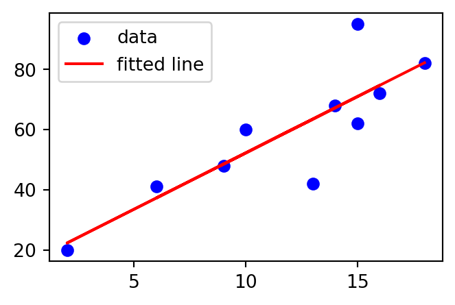

4 Linear Regression and Correlation, Logistic Regression
\[ \renewcommand{\P}{\mathbb{P}} \renewcommand{\E}{\mathbb{E}} \newcommand{\R}{\mathbb{R}} \newcommand{\var}{\mathrm{Var}} \newcommand{\cov}{\mathrm{cov}} \newcommand{\corr}{\mathrm{corr}} \newcommand{\dx}{\,\mathrm{d}x} \newcommand{\dy}{\,\mathrm{d}y} \newcommand{\eps}{\varepsilon} \]
Useful resources for linear regression are Theory and Problems of Probability and Statistics by M.R.Spiegel and How to Use Statistics by S.Lakin. Furthermore, useful resources for logistic regression are Generalised Linear Models by P.McCullagh and J.A.Nelder, and Using Multivariate Statistics by B.G.Tabachnick and L.S.Fidell. The material taught in this chapter will also be met from a machine learning perspective in MA-M28 Modelling and Machine Learning — please see chapters 5 and 6 of Essential Math for Data Science by T.Nield if you would like an insight into this.
Recall in Example 1.29 we discussed bivariate data and associated scatter plot. Sometimes it is visually clear that a linear relationship exists between the variables, for example, in the scatter plot in Example 1.29 it seems that the more time is spent revising the higher the exam mark the student receives. The diagram above contains the same data, but with a line indicating the likely relationship between the variables.
A linear regression fits a straight line to observed data, attempting to demonstrate a linear relationship between variables and make predictions on new data yet to be observed. The following method will begin to address this.
4.1 The Method of Least Squares
Once a statistical model has been set up, its parameters must be estimated from the data. The method of least squares can provide good such estimates. The method minimises the sum of squared residuals, i.e. it minimises the sum of the square of the differences between an observed value and the value produced by the model. We will concentrate on linear least squares which will provide the theory behind simple linear regression.
Assuming that we have data pairs \((x_1,y_1),\ldots,(x_n,y_n)\), the model line will take the form \[ \E(y)=\beta_0+\beta_1x, \] where \(y\) is the dependent variable (response variable) (it depends on \(x\)!) and \(x\) is the independent variable (explanatory/predictor variable) (it does not depend on another variable). In fact the variables will be related by \[ y=\beta_0+\beta_1x+\epsilon, \] where \(\epsilon\) is the error. It is clear that there is some error when using our model line. By minimising the sum of the square of the residuals (using partial differentiation) we arrive at the following estimates:
Correlation
The strength of a linear relationship between the variables can be measured by the Pearson correlation coefficient (or just the correlation coefficient) which is given by
\(r\) can take values between \(-1\) and \(1\) where \(-1\) and \(1\) represent a perfect linear relationship. \(r=0\) means that there is no linear relationship. A positive value of \(r\) denotes a positive correlation while a negative value of \(r\) denotes a negative correlation. As a general rule of thumb we use the following criteria:
4.2 Simple Linear Regression
This is a process to obtain a suitable straight line to predict values of one variable (\(y\)) from the values of the other (\(x\)), where there is a linear relationship between them. The most common approach is to use the least squares model above, i.e. \[
\hat{y}=\hat{\beta}_0+\hat{\beta}_1x.
\] We can use the correlation coefficient \(r\) to test the strength of the linear relationship between the variables, as above, but also \(r^2\) (often \(R^2\) is used) can be used. \(r^2\) gives the proportion of the variance of \(y\) that is explained by variation in \(x\), and the closer this value is to 1 the stronger the relationship (clearly the closer \(r^2\) is to 0 the weaker the relationship). Essentially it measures how well the regression model fits the real data.
Now we are in a position to return to the example above and form a regression line for the data.
Note that correlation does not necessarily imply causation — variables may be related for no apparent reason.
Example 4.1 This example investigates the relationship between revision time and exam marks — see the table below for data. The calculations that we need for the estimates \(\hat{\beta}_0\) and \(\hat{\beta}_1\) can be found in the following table using the fact that \(\bar{x}=11.8\) and \(\bar{y}=59\):
Then \[ \hat{\beta}_1=\frac{\sum_{i=1}^n(x_i-\bar{x})(y_i-\bar{y})}{\sum_{i=1}^n(x_i-\bar{x})^2}=\frac{837}{223.6}=3.743 \] and \[ \hat{\beta}_0=\bar{y}-\hat{\beta}_1\bar{x}=59-3.743\times11.8=14.829. \] Therefore the equation of the regression line is given by, \[ \hat{y}=3.743x+14.829. \] The Pearson correlation coefficient is given by \[ r=\frac{S_{xy}}{\sqrt{S_{xx}S_{yy}}}=\frac{837}{\sqrt{223.6}\sqrt{4340}}=0.85, \] indicating a strong positive correlation. The value of \(r^2\) is 0.723 indicating that \(72.3\%\) of the variance of the Marks is explained by Revision. We conclude therefore that the regression model fits the data well in this case.
The regression line can then be used to estimate the value of \(y\) for a given \(x\), for example, if we wanted to predict the exam mark obtained for 11 hours of revision we obtain, \[ \hat{y}=3.743\times11+14.829\approx56. \] Common sense should be used when predicting using the regression model; we cannot predict outside the possible range of the \(x\) values, we would not, for example, try to predict what happens if a student were to revise for -5 hours.
Example 4.2 Calculate a regression line for the data below (the relevant conditions for linear regression may be assumed):
where \[ \begin{aligned} \bar{x}&=12.8\\ \bar{y}&=59\\ S_{xx}&=\sum_{i=1}^n(x_i-\bar{x})^2=821.6\\ S_{xy}&=\sum_{i=1}^n(x_i-\bar{x})(y_i-\bar{y})=-1839\\ S_{yy}&=\sum_{i=1}^n(y_i-\bar{y})^2=4340. \end{aligned} \] We now find \[ \begin{aligned} \hat{\beta}_1&=\frac{S_{xy}}{S_{xx}}=\frac{-1839}{821.6}=-2.238\\ \hat{\beta}_0&=\bar{y}-\hat{\beta}_1\bar{x}=87.65.\\ \end{aligned} \] Therefore the regression line is given by \[ \hat{y}=-2.238x+87.650. \] and the correlation coefficient by \[ r=\frac{S_{xy}}{\sqrt{S_{xx}S_{yy}}}=\frac{-1839}{\sqrt{821.6}\sqrt{4340}}=-0.97, \] indicating a very strong negative correlation. \(r^2=0.941\), indicating that \(94.1\%\) of the variance of Marks is explained by Classes Missed and we conclude that the regression model fits the data very well.
4.3 Multiple Linear Regression
This method is an extension of the model we met in simple linear regression, i.e. \[ y=\beta_0+\beta_1x+\epsilon \] to the model
where we have \(n\) independent variables, \(x_1,\ldots,x_n\) and the single dependent variable \(y\) (dependent on these \(x_1,\ldots,x_n\)).
In particular, we will concentrate on the case where we have 2 independent variables \(x_1\) and \(x_2\), i.e. the model, \[ y=\beta_0+\beta_1x_1+\beta_2x_2+\epsilon. \] Obtaining the equations for the coefficients is easier if we code the variables in the following way: \[ \begin{aligned} v_i&=y_i-\bar{y}, \\ u_{1i}&=x_{1i}-\bar{x}_1, \\ u_{2i}&=x_{2i}-\bar{x}_2. \end{aligned} \] We now write the model as \[ V=\beta_0'+\beta_1u_1+\beta_2u_2+e. \] The constant term changes from \(\beta_0\) to \(\beta_0'\). Again the method of least squares is used where the quantity to be minimised with respect to variation in \(\beta_0'\), \(\beta_1\) and \(\beta_2\) is \[ Q=\sum_{i=1}^n(v_i-\beta_0'-\beta_1u_{1i}-\beta_2u_{2i})^2. \]
Again, we will not go into the details of this process as it uses methods that are beyond the scope of this module. Essentially the process results with the equations: \[ \begin{aligned} \hat{\beta}_1\sum_{i=1}^n u^2_{1i}+\hat{\beta}_2\sum_{i=1}^n u_{1i}u_{2i}&=\sum_{i=1}^n u_{1i}v_i,\\ \hat{\beta}_1\sum_{i=1}^n u_{1i}u_{2i}+\hat{\beta}_2\sum_{i=1}^n u_{2i}^2&=\sum_{i=1}^n u_{2i}v_i. \end{aligned} \] These are sometimes called the normal equations — although no relation to the normal distribution. Using the notations \[ \begin{aligned} S_{pq}=&\sum_{i=1}^n u_{pi}u_{qi}=\sum_{i=1}^n(x_{pi}-\bar{x}_p)(x_{qi}-\bar{x}_q), p,q=1,2,\\ S_{0p}=&\sum_{i=1}^n u_{pi}v_i=\sum_{i=1}^n(x_{pi}-\bar{x}_p)(y_i-\bar{y}), p=1,2, \end{aligned} \] we may write the normal equations as \[ \begin{aligned} \hat{\beta}_1S_{11}+\hat{\beta}_2S_{12}&=S_{01},\\ \hat{\beta}_1S_{12}+\hat{\beta}_2S_{22}&=S_{02}. \end{aligned} \] Using standard techniques for solving simultaneous equations and \(D=S_{11}S_{22}-S^2_{12}\) we find \[ \begin{aligned} \hat{\beta}_1&=\frac{S_{22}S_{01}-S_{12}S_{02}}{D}\\ \hat{\beta}_2&=\frac{S_{11}S_{02}-S_{12}S_{01}}{D}. \end{aligned} \] Finally, \[ \hat{\beta}_0=\bar{y}-b_1\bar{x}_1-b_2\bar{x}_2. \] this gives us the following model: \[ \hat{y}=\hat{\beta}_0+\hat{\beta}_1x_1+\hat{\beta}_2x_2. \]
If we return to the example of predicting exam marks, but now based on both Revision Hours and Coursework Marks, this would be a situation of a multiple linear regression with two predictor/independent variables.
Example 4.3 Dice were thrown to obtain ten values of each of the following: \(X_1=\) value on a twelve-sided die, \(X_2=\) twice the value on a six-sided die, \(Z=\)value on a six-sided die, \(Y=X_1+X_2+Z\). The values obtained were
We find that \[ \begin{aligned} S_{11}&=\sum_{i=1}^n(x_{1i}-\bar{x}_1)^2=\sum_{i=1}^n x_{1i}^2-\frac{(\sum_{i=1}^n x_{1i})^2}{n}=58.1\\[3mm] S_{22}&=\sum_{i=1}^n(x_{2i}-\bar{x}_2)^2=\sum_{i=1}^n x_{2i}^2-\frac{(\sum_{i=1}^n x_{2i})^2}{n}=120.4\\[3mm] S_{12}&=\sum_{i=1}^n(x_{1i}-\bar{x}_1)(x_{2i}-\bar{x}_2)=\sum_{i=1}^n x_{1i}x_{2i}-\frac{\sum_{i=1}^n x_{1i}\sum_{i=1}^n x_{2i}}{n}=-16.2\\[3mm] S_{01}&=\sum_{i=1}^n(x_{1i}-\bar{x}_1)(y_i-\bar{y})=\sum_{i=1}^n x_{1i}y_i-\frac{\sum_{i=1}^n x_{1i}\sum_{i=1}^n y_i}{n}=45.6\\[3mm] S_{02}&=\sum_{i=1}^n(x_{2i}-\bar{x}_2)(y_i-\bar{y})=\sum_{i=1}^n x_{2i}y_i-\frac{\sum_{i=1}^n x_{2i} \sum_{i=1}^n y_i}{n}=84.8. \end{aligned} \] This gives the normal equations as follows: \[ \begin{aligned} 58.1\hat{\beta}_1-16.2 \hat{\beta}_2&=45.6\\ -16.2\hat{\beta}_1+120.4\hat{\beta}_2&=84.8. \end{aligned} \] Then \[ \begin{aligned} D&=58.1\times120.4-(16.2)^2=6732.8\\[3mm] \hat{\beta}_1&=\frac{120.4\times45.6+16.2\times84.8}{D}=1.019\\[3mm] \hat{\beta}_2&=\frac{58.1\times84.8+16.2\times45.6}{D}=0.841\\[3mm] \hat{\beta}_0&=18.2-1.019\times7.7-0.841\times6.6=4.803. \end{aligned} \] Therefore the regression equation is \[ \hat{y}=4.803+1.019x_1+0.841x_2. \]
4.4 (Binary) Logistic Regression
The main use of logistic regression is to predict a binary outcome from a linear combination of independent variables. For example, we may wish to predict the probability of passing an exam from the independent variables attendance at lectures and hours of revision. This is also used in insurance to calculate the propensity to claim.
Firstly, the dependent variable \(Y\sim Bin(1,p)\), and we want to use the a linear combination of the independent variables to predict \(p\).
For this method we make use of the logit function, which is the log odds. In particular, we have
\[
odds=\frac{p}{1-p}.
\]
Then, the link function we use is
\[
\text{logit}(p)=\ln(odds)=\ln\left(\frac{p}{1-p}\right).
\]
The graph of this function is as follows:
Therefore, the model we consider is the following:
\[ \text{logit}(p)=\ln\left(\frac{p}{1-p}\right)=\beta_0+\beta_1x_1+\beta_2 x_2+\cdots+\beta_nx_n \tag{4.2}\]
for independent, or predictor variables \(x_1,\ldots, x_n\) and constant coefficients \(\beta_0,\ldots,\beta_n\).
As we will be seeking estimates of \(p\), i.e. \(\hat{p}\), from independent variables that could take any real value, it makes sense to next consider the inverse of the logit function. Let \[
y=\beta_0+\beta_1x_1+\cdots+\beta_nx_n,
\] then
\[
\begin{aligned}
&e^y=\frac{p}{1-p}\\
\implies & p=(1-p)e^y=e^y-pe^y\\
\implies & p(1+e^y)=e^y\\
\implies & p=\frac{e^y}{1+e^y}=\frac{e^{\beta_0+\beta_1x_1+\cdots+\beta_nx_n}}{1+e^{\beta_0+\beta_1x_1+\cdots+\beta_nx_n}}
\end{aligned}
\]
This is an example of a sigmoid function, the graph of which is as follows:
From the graph above, we can see that for any real input \(y\), we get \(0<p<1\) which intuitively makes sense.
In practice, we obtain an estimate \(\hat{p}\) of \(p\) using maximum likelihood estimates of the coefficients \(\beta_0,\beta_1,\ldots,\beta_n\), i.e.
\[
\hat{p}=\frac{e^{\hat{\beta}_0+\hat{\beta}_1x_1+\cdots+\hat{\beta}_nx_n}}{1+e^{\hat{\beta}_0+\hat{\beta}_1x_1+\cdots+\hat{\beta}_nx_n}}.
\]